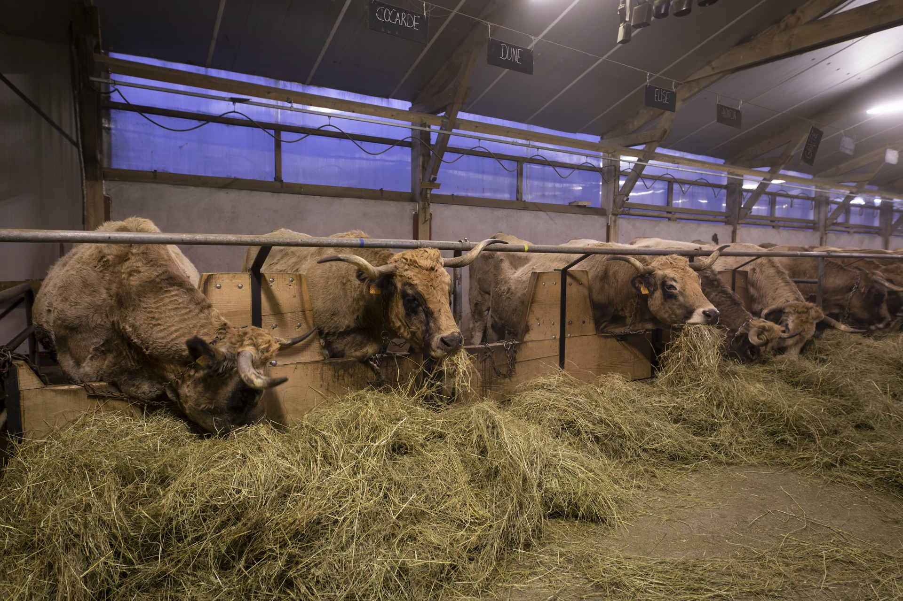
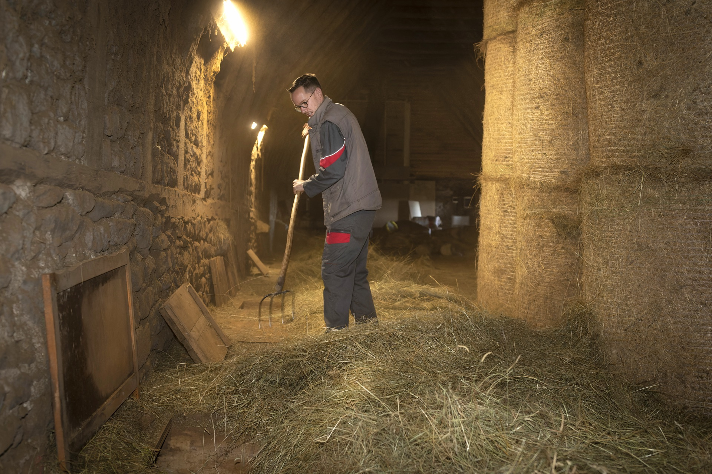
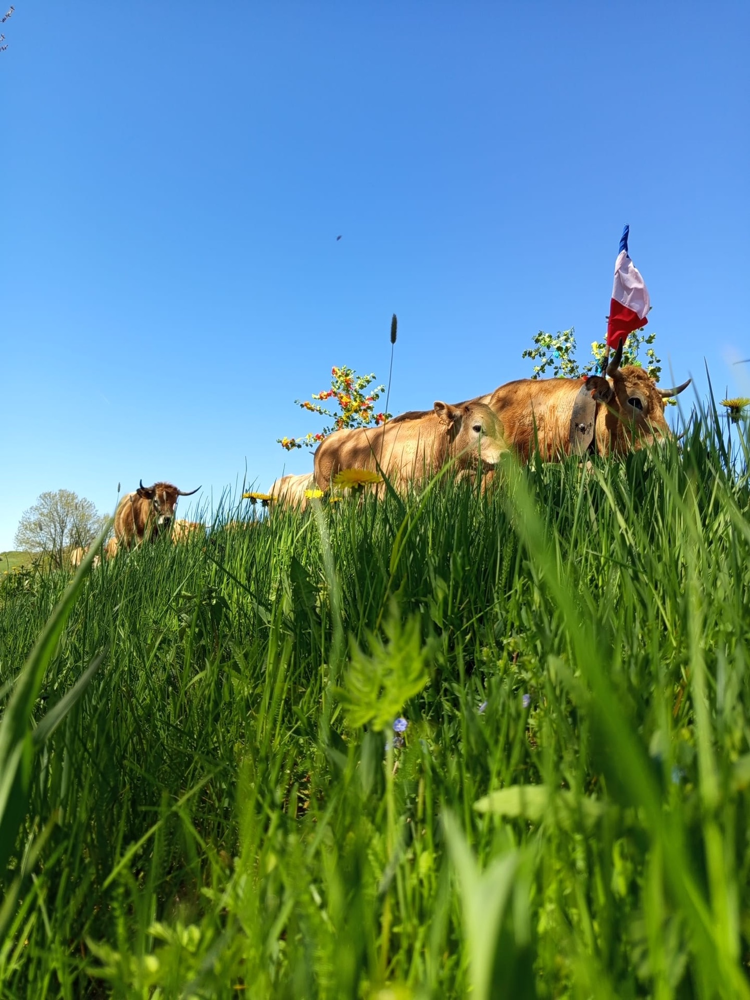
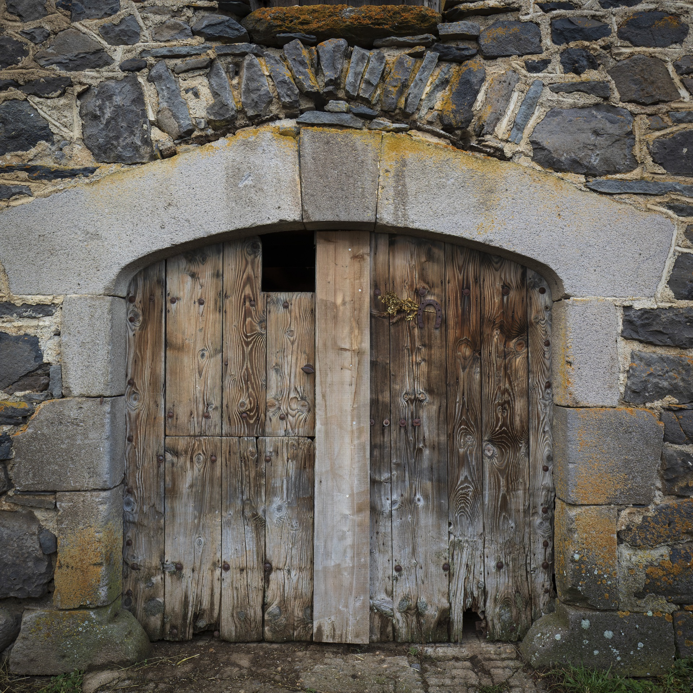
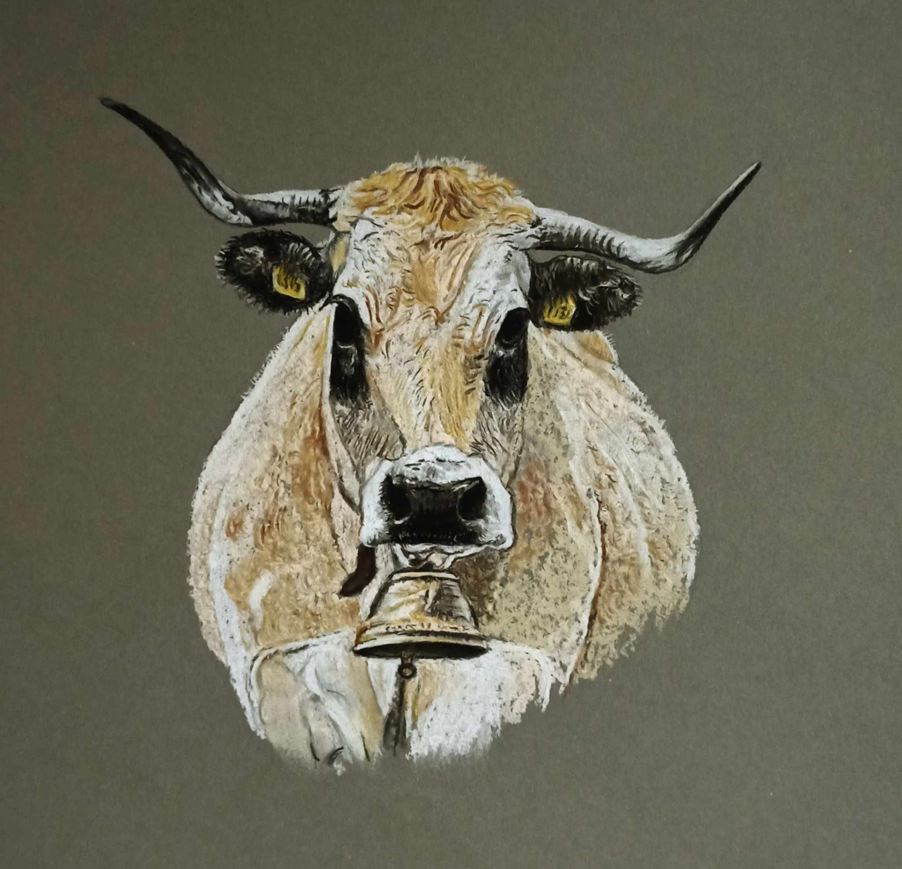
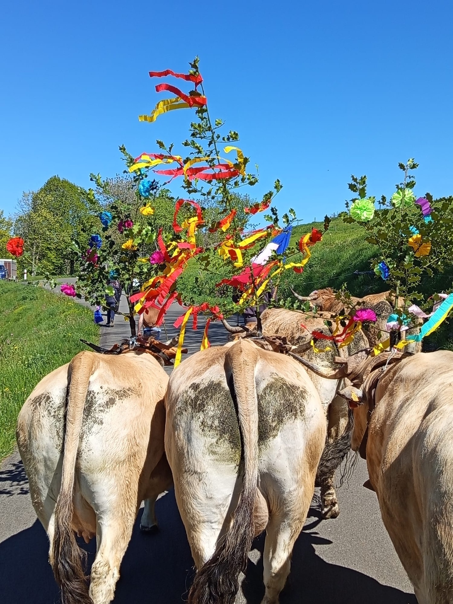

80
Mères Aubrac
Troupeau conduit en sélection et race pure, soigneusement entretenu pour préserver la qualité génétique de la race Aubrac.
Cézens · Cantal · Aubrac
Naturellement Aubrac
Élevage Aubrac race pure & charcuterie artisanale
aux recettes ancestrales

Au cœur du plateau de l'Aubrac, dans le village de Cézens au Cantal, Thomas Gras perpétue avec sa famille une agriculture de terroir ancrée dans la tradition et le respect de la nature.
Chaque jour, dès l'aube, Thomas est aux côtés de ses bêtes. De la mise-bas au sevrage, de l'estive à l'étable, il accompagne son troupeau avec la même attention que ses aïeux. C'est cette relation unique entre l'homme et l'animal qui donne tout son sens aux produits de la Ferme du Graillou.
Sa ferme, c'est aussi une aventure familiale. Sa femme et ses enfants participent à la vie de l'exploitation, transmettant à la prochaine génération les valeurs d'un élevage simple, authentique et profondément respectueux de la terre et des animaux.
Rustique, docile et d'une beauté saisissante, la vache Aubrac est parfaitement adaptée aux conditions exigeantes des hauts plateaux du Cantal. À la Ferme du Graillou, elle est élevée dans le respect total de ses besoins naturels.
Troupeau conduit en sélection et race pure, soigneusement entretenu pour préserver la qualité génétique de la race Aubrac.

Exclusivement du foin de prairie naturelle récolté sur la ferme en hiver, et de l'herbe fraîche en libre pâturage en estive. Zéro aliment industriel.

20 génisses de 2 ans et 20 génisses d'1 an garantissent la pérennité du troupeau et la continuité de l'élevage pour les générations futures.

« L'Aubrac, c'est avant tout une race vivant en harmonie avec son territoire, libre et robuste sur les hauts plateaux du Massif Central. »
De la ferme à votre table, chaque produit est élaboré avec soin selon des recettes traditionnelles transmises de génération en génération. Une charcuterie authentique qui révèle toute la saveur du terroir cantalien.

Élaborée à partir de notre bœuf Aubrac élevé en race pure et nourri exclusivement au foin naturel, notre charcuterie bovine exprime toute la typicité de la race et du terroir cantalien.

Nos porcs sont transformés selon des méthodes artisanales héritées des anciens, pour une charcuterie généreuse aux saveurs profondes et authentiques.
Chaque printemps, la Ferme du Graillou participe à la grande fête de la transhumance, moment emblématique du Cantal où les troupeaux Aubrac montent vers les estives, parés de leurs plus beaux ornements de fleurs et de rubans colorés.
Ce moment festif et populaire incarne les valeurs profondes de la ferme : l'attachement au terroir, le respect du rythme des saisons, et la fierté d'une agriculture vivante et enracinée.
La transhumance, c'est le lien entre les hommes et la terre, entre passé et avenir, entre la vallée et les hauts plateaux de l'Aubrac.


Revenir à l'essentiel. Des animaux bien élevés, un sol respecté, des produits vrais. Pas de compromis sur la qualité, pas d'artifices dans les méthodes.
Fier du Cantal et de l'Aubrac, Thomas Gras élève des animaux en parfaite adéquation avec leur environnement naturel. L'identité du lieu s'exprime dans chaque produit.
Foin de prairie naturelle récolté sur la ferme, herbe fraîche en estive : nos animaux se nourrissent exclusivement de ce que la terre produit. Aucun aliment industriel, jamais.
Une ferme familiale où les enfants grandissent au rythme des saisons et des animaux. Les savoir-faire ancestraux se transmettent de génération en génération.

La Ferme du Graillou dispose de sa propre boutique de vente directe à la ferme. Un endroit chaleureux pour découvrir et acheter l'ensemble de nos charcuteries artisanales.
Venez à la rencontre de Thomas et de sa famille, découvrez les coulisses d'un élevage passionné, et repartez avec les saveurs authentiques du Cantal directement sous le bras.
La Ferme du Graillou est située au Bourg, à Cézens (15230) dans le Cantal, au cœur du plateau de l'Aubrac en Auvergne. Elle est facilement accessible depuis Saint-Flour ou Murat.
Nos charcuteries sont disponibles en vente directe à la ferme dans notre boutique en bois à Cézens. Contactez-nous par téléphone ou email pour connaître les disponibilités et passer commande. Nous sommes également présents sur certains marchés locaux.
L'Aubrac est une race bovine rustique et docile, originaire du plateau du même nom en Aveyron et Cantal. Reconnue pour la qualité exceptionnelle de sa viande persillée et sa robustesse, elle est parfaitement adaptée aux conditions des hauts plateaux. À la Ferme du Graillou, le troupeau est conduit en race pure et sélection.
Nos 80 vaches Aubrac sont nourries exclusivement au foin de prairie naturelle récolté sur la ferme en hiver, et bénéficient de pâturages naturels en libre accès durant l'estive. Aucun aliment industriel, aucun intrant extérieur : une alimentation 100% naturelle et locale.
Nous proposons une gamme complète de charcuterie artisanale :
Tous nos produits sont élaborés selon des recettes traditionnelles et ancestrales.
Nos produits sont principalement disponibles en vente directe à la ferme. Pour toute demande de livraison ou de commande à distance, contactez-nous directement par téléphone ou email afin de trouver la solution la plus adaptée.





La Ferme du Graillou vous accueille à Cézens dans le Cantal pour découvrir ses produits et son élevage Aubrac.